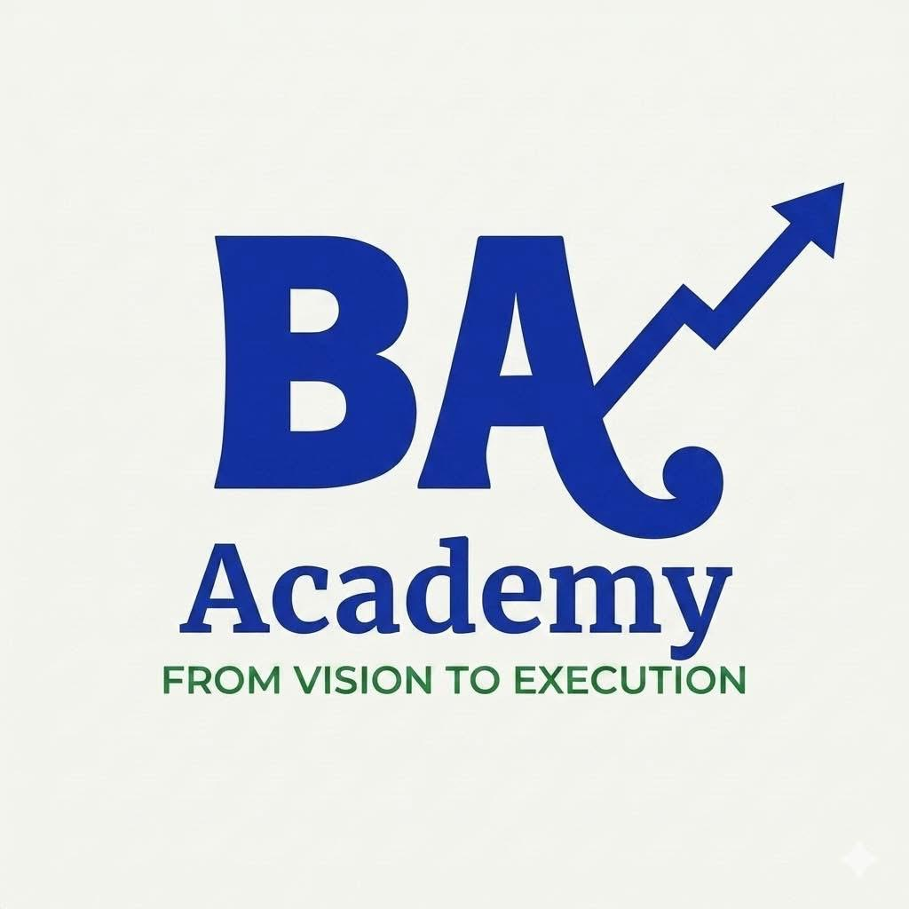

BA Engineering Academy
v2.5
60:00
محاكي اختبار PMI-RMP الاحترافي
BA Engineering Academy • مقسم حسب محاور الاختبار الدولي
مرحباً بك في المحاكي المطور. يغطي هذا التقييم 50 سؤالاً موزعة بدقة على محاور إدارة المخاطر الخمسة (تحديد المخاطر، التحليل الكيفي، التحليل الكمي، الاستجابة، المراقبة) لقياس جاهزيتك الكاملة.
سؤال 1
المحور
من 50 سؤال
جاري التحميل...
تقييم أداء رسمي • BA Engineering Academy
0%
الدرجة النهائية
0/50
الإجابات الصحيحة